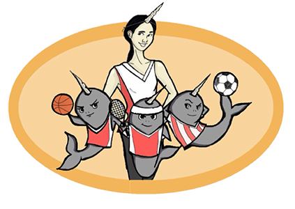

New School Athletics
HJ Gaskins (Basketball team captain), Max Resetar (Starting point guard), & Gio Cortez
Mama Narwhal

Diane Yee, The New School’s athletic director, can be seen pacing the sidelines of the Narwhals’ basketball games and
soccer matches. She has a camera in hand, documenting her hard work. Sometimes her short black hair is in a
ponytail, sometimes it falls straight to her shoulders. She usually has some sort of Narwhal athletic gear on, a
movement she’s spearheaded. She’s created Narwhal shirts, socks, scarves, hats, sweatpants. She doesn’t always
cheer for the Narwhals during games. She stays cool. She’s about results.
“Diane’s on a mission,” basketball team manager and studentworker Blair Reeves said. Reeves has worked for Yee for
the past three years and has seen athletics flourish under Yee. “She’s on a mission to fill the void of athletics at The
New School. She is one of the few people at this university that actually listens to the students and provides them with
fitness classes, outdoor trips and varsity sports teams,” Reeves said. Reeves, along with her coworkers, have started
calling their boss “Mama Narwhal.”
Yee came to The New School in August, 2012. She graduated from The College of New Jersey, an NCAA Division III
school, where she says her love for athletics grew.
“[I] was able to participate yearround in intramurals [in college], and I played club volleyball, I helped with the varsity
football program. I was extremely interested in athletics and recreation, not only to participate, but to assist as a student
manager, and also they paid student employees of the department,” Yee said.
“So I wanna be able to bring that to other students, so that is works for them. Not only for social exercise, but for fitness,
and just as a stress relief,” Yee said.
When Yee first got to The New School, she worked closely with the basketball team, which was in place for a few years.
She’s already seen results.
“In the two years I’ve been here, our opponents have been kind of in awe of what we’ve done in a short amount of time.
I’ve become good friends with the people at Pratt, and Dean Baker over at Cooper. And they really applaud our work
and out students and how far we’ve come,” Yee said.
While wins haven’t been easy to come by in the past few years for the basketball team, this year the Narwhals are off to
a 30 start. The soccer team took the Village’s Cup after beating Cooper Union in October. The cross country team
enjoyed great success this Fall, with the women’s team placing third in a race in September and grad student MacLean
O’Donnell tearing through three races for the men.
Casey Barber played for the Narwhals basketball team for a year and has worked for Yee since she was a freshman.
“Diane is extremely involved and a passionate leader,” Barber said. “And her work is reflected in the massive growth of
athletics and recreation of The New School each year.”
That massive growth can be seen in the everexpanding intramurals for the school. Students can participate in
basketball, volleyball, dodgeball and soccer. Yee’s Athletic and Recreation Office offers even more.
“We have an outdoor adventures program. Every weekend we’re running multiple trips and every single trip we have a
new student who has never done anything through our program before,” Yee said.
“So we’re still constantly getting new students in the program and learning about what we do. And once we get them in
one location, they’ll learn about everything else,” Yee continued. “If they come out to yoga for the first time or self-
defense class, then they also start learning about intramurals, and our outdoor adventures program, and that we have
athletics. So it’s really coming together.”
“You can tell she really cares about the department because she puts her heart into every event and program,”
Carly McDougald, one of Yee’s workers, said. “I get emails from her at, like, 3 AM about getting a flyer started or
promoting an event on our social media which just goes to show she’s always thinking about giving more to the
students and her brainstorming runs on a 24hour clock.”
Yee, however, does recognize the need to legitimize the program and has ideas about facilities that could help
The New School’s growing athletic presence. Right now, the only dedicated space that New School athletes don’t have
to pay to use is a oneroom studio on the eighth floor of 80 Fifth Avenue. There are a few free weights and room for
stretching, with a mirror. Other than that, The New School either rents space or uses Manhattan’s streets and parks to
train.
“We’re still looking for committed facilities and practice space,” Yee said. “I think that’s one, is to know that
we’re safe with space. For example basketball has been playing for years at Washington Irving High School, but this
upcoming spring we don’t even know if we are gonna get the gym back! So just making sure we have committed
practice space close to campus is a big part of ‘next steps’.”
There’s no word yet on whether or not the basketball team will be able to maintain their practice space.
Michael Joy is Director of Campus Planning at The New School. He went to The Catholic University of
America, an NCAA Division III school in Washington, DC, with multiple dedicated athletic facilities. When asked about
previous plans to build a basketball court in The New School’s University Center, Joy said he hadn’t heard anything
about that.
“I’m trying to think of all the old documents I’ve seen,” Joy said. “I’ve never seen one that has a gym. I’ve never
seen anything (about a gym) and I've seen some of the older stuff,” Joy continued. “It did go through a series of re
designs, it was a much larger building at one point and it was not well received by the neighbors, so it was kind of
scaled back.”
“I would love to have a court on campus, that could be used for basketball, volleyball, soccer, and tennis,” Yee
continued. “But that’s something we would need to apply a whole new building for. I would love one dedicated space,
that all students could utilize. Obviously it would be a lot of square footage but I think we could start small and expand it.
I would have a full weight room, with treadmills and ellipticals for cardio, also a proper set of free weights, and a proper
set of plate lifting machines. I have always imagined building a gym that could accommodate everything we (athletics)
have, but it would have to outfitted with a complete fitness room, maybe even a cycling corner or cycling studio... but,
you know, that takes space, and money.”
Linda Reimer, Senior Vice President for Student Services at The New School, wouldn’t disclose the athletics
budget.
“When resources are requested, the leadership of the university has to prioritize, since the pool of resources is
not big enough to accommodate everything everybody wants,” Reimer said. “The President (David Van Zant) and
Provost (Tim Marshall) are using the current strategic plan to determine those priorities.”
Reimer wouldn’t go indepth about the strategic plan, but she did compliment Yee.
“Compare before 2012 to where we are now. Sometimes you can make huge improvements with the same
resources by using creativity and finding efficiencies,” Reimer said.
“A big part of bringing a gym on campus, is that it gives so many students opportunities for employment,” Yee
said. “I know there’s a ton of students that are granted with student funds, and never utilize them cause they don’t know
hot to find a job. And by opening a gym, that’s open to all students it creates jobs; just monitoring, maintenance, and
upkeep. So that’s another reason why having fitness on campus is beneficial for the students.”
After each Narwhal victory, becoming more common in all six Narwhal teams, Yee’s hard work pays off a little
more. She’s getting results.

 “I’ve had a blast on the running team. I wish it wasn’t over.” - MacLean O’Donnell
“I’ve had a blast on the running team. I wish it wasn’t over.” - MacLean O’Donnell  “At Texas A&M I was in a fully funded Division I athletic department so I had every single resource available for an athlete, as well as a scholarship, a dedicated academic center for the athletes,” O’Donnell said.
“At Texas A&M I was in a fully funded Division I athletic department so I had every single resource available for an athlete, as well as a scholarship, a dedicated academic center for the athletes,” O’Donnell said.